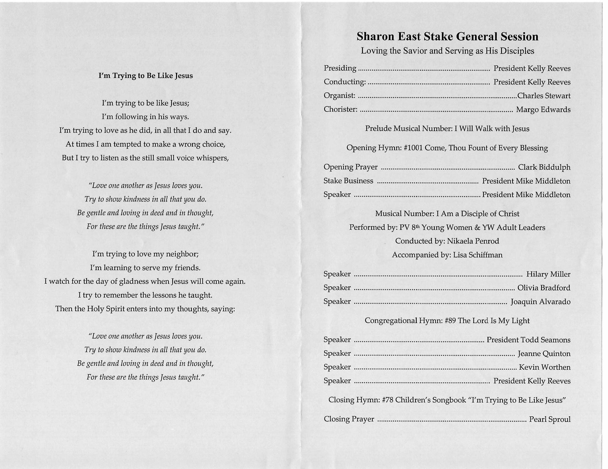

This weekend was the semi-Annual Conference of the Provo Sharon East Stake.
Initially, thought of going out of town for the weekend. Instead, we visited Park City and Salt Lake City. We stayed home and attended both General Sessions.
The topic for the Saturday evening session was gathering. Specifically the Gathering of Israel.
President Kelly Reeves took the stand at 7:45PM. We all wondered how he will speak for 45 minutes. We were hoping this would be a short session.
Instead, President Reeves took the Q&A approach.
He had asked members ahead of the meeting to share their experiences in gathering. Members responded, and sent him their experiences in photos and in the written format.
In addition, President Reeves asked members to clarify aspects of gathering. Members were eager to share their experiences. Microphones were passed all around the chapel.
People were engaged and were lifted.
The meeting ended around 8:30PM as plannned.
As Abraham Lincoln stated, “It is fitting and proper…” that we celebrate significant events in our lives and at country level.
But maybe the challenge is to elevate everyday experiences so that we are not stretching or reaching for the next level, that these events are meant to teach.
Morning session began as light drizzle came down, amidst more sunshine than clouds.
Greater part of the stake members were in the MSB (Multi-Stake Building) on 9th.
The speakers and ones that gave prayers were represented by both young and old.
A deacon aged young man provided the opening prayer. Similarly a young woman, formerly Laurel group, gave the closing prayer.
The speakers represented major age groups of the stake.
Sister Quinn, aged 86, gave her talk while sitting in her wheelchair. While she spoke, one could see both Olivia and Joaquin, framed in the background. Jeanne spoke eloquently and with strength, both Olivia and Joaquin follwed the talk from the beginning to the end.
A display of enduring to the end.
Meeting opened with changing of Stake auxiliary leaders.
| Auxiliary Group | Released | Called |
|---|---|---|
| Primary | Thornock | Wilkey |
| Young Women | Craig | Haight |
A thought, as the meeting passed the 90 minute mark. Long meetings are a challenge to even old members. Then how about these young members?
If they endure well, they will have that much more advantages in later life. Not so much what they heard and will remember, but why they came to the meeting and stayed with their families.
And it came to pass that when they came up to the temple, they pitched their tents round about, every man according to his family, consisting of his wife, and his sons, and his daughters, and their sons, and their daughters, from the eldest down to the youngest, every family being separate one from another. |
(Mosiah 2:5)
The technology that overcomes the constraint of time and space. The people in the overflow, Stake Center, heard and saw events and people as they occurred.
Former BYU President and also the former Stake President Kevin Worthen spoke. Years of his service had aged him physically, his hair was completely white. However, his voice and the manner of delivery was nearly the same, even when he led the Stake 20 years ago.
Remembered those times when we met at the old Provo Tabernacle. We would sit on the balcony and look down. Stake leaders were adorned with leis, made by faithful, tradition-loving stake members. President Mike Middleton, spoke of Citius, Altius and Fortius. In particular the feat of Bob Beamon, who broke the long jump record by nearly 2 feet.
Beamonesque
President Seamon, taught members how to mourn together. Not taking the cup away but staying awhile with those that mourn.
Stake President Reeves closed the meeting with the dual nature of worshipping. It may seem repetitive but when you add people, each experience becomes unique.
This is a model of a Stake of Zion. Members live in a close proximity, known by one another. The division or boundary between the church and the school is small and thin.
By participating and uplifting one another, till the end, the young members are seeing and learning the Lord’s way of navigating this life.
Full dependence on the Lord and at the same time, do all within our ability.
